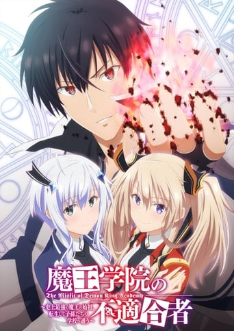

- TOP 25
-
1

OnePiece
Der junge Monkey D. Ruffy stellt eine Mannschaft zusammen, um nach dem legendären Schatz One Piece zu suchen. Die Strohhutpiraten erleben auf ihrer Jagd jede Menge Abenteuer.
-
2

Dragonball Super
Son Goku und seine Freunde genießen das ruhige Leben auf der Erde. Doch das friedliche Idyll wird urplötzlich gestört, als Beerus, der Gott der Zerstörung, aus einem langen Schlaf erwacht und zusammen mit seinem Begleiter Whis bei Bulmas Geburtstagsfeier auftaucht. Sie haben die letzten verbliebenen Saiyajins, Vegeta und Son Goku, aufgespürt, in der Hoffnung, unter ihnen den Super-Saiyajin-Gott zu finden.
-
3

Naruto Shippuden
Nach zweieinhalb Jahren kehrt Naruto in sein Dorf zurück und wird dort freudig aufgenommen. Viel hat sich verändert, so ist zum Beispiel Gaara zwischenzeitlich ein Kazekage geworden. Doch es bleibt nicht lange friedlich, denn zwei Mitglieder des Akatsuki-Clans, Deidara und Sasori, sind darauf aus, Gaara zu entführen und ihm seinen Biju-Geist zu entreißen.
-
4
Fairy Tail
Lucy hat nur ein großes Ziel vor Augen: Sie will eine erfolgreiche Magierin werden. Als sie auf den jungen Natsu trifft schließt sich die 17-Jährige ihm und seiner Katze Happy an.
-
5
Hunter x Hunter
Das nächste Kapitel der Hunter-Saga! Gon und Knuckle treffen in einer finalen Konfrontation aufeinander. Außerdem hat Gon ein Date mit Palm, das aus dem Ruder läuft und die Hunter sehen nach langer Zeit ihren Freund Kite wieder, der nicht mehr derselbe ist. In der Zwischenzeit wird Meteor-City von einer Gruppe Chimera Ants bedroht.
-
6
Attack on Titan
In 2000 Jahren lebt die Menschheit hinter 50 Meter hohen, gewaltigen Mauern. Denn die Welt wird von riesigen Titanen beherrscht, die anscheinend nur ein Ziel haben: Menschen zu fressen! Als eines Tages ein Exemplar von ungeheuren Ausmaßen über die Mauer blickt, beginnt erneut ein Gemetzel. Doch einzig der junge Eren Jäger schwört Rache. Eines Tages wird er die Titanen allesamt vernichten!
-
7
One Punch Man
Nach drei Jahren hartem Training ist auf seinem Kopf zwar kein Haar mehr übrig, aber dafür erledigt er jeden Gegner mit nur einem Schlag! Von seiner eigenen Kraft gelangweilt, sehnt sich Saitama aka One Punch Man nach härteren Gegnern. Zwar zollen ihm die Leute dafür keinen Respekt, doch das geht ihm an seinem Hobby-Helden-Hintern vorbei.
-
8
Jujutsu Kaisen
Mühsal, Reue, Schmach: Die negativen Gefühle, die den Herzen der Menschen entspringen, werden zu Flüchen, die sich in unser aller Leben einnisten. Und das Einzige, was einen Fluch austreiben kann, ist ein anderer Fluch. Yūji verbringt seine Tage wie jeder andere Schüler. Doch eines Tages wird sein Freund von Flüchen angegriffen und um ihn zu retten, isst er den Finger des Zwiegesichts Sukuna. Fortan teilt er sich seinen Körper mit ihm und tritt der Jujutsu-Akademie bei, um gegen Flüche zu kämpfen.
-
9
Sword Art Online
SWORD ART ONLINE: ALICIZATION erzählt die Saga rund um den Spieler Kazuto „Kirito“ Kirigaya nach den Ereignissen von ORDINAL SCALE weiter: Kirito hat mittlerweile einen Nebenjob bei der Firma Rath, die dabei ist, eine neue Full-Dive-Technologie zu entwickeln – der sogenannte Soul-Translator.
-
10
The Seven Deadly Sins
Vor langer Zeit wurde das Königreich Britannia von einer Untergruppe des Ordens der Heiligen Ritter in Aufruhr versetzt. Die „Seven Deadly Sins" wurden mit dem grausamen Tod des Generals der Heiligen Ritter in Verbindung gebracht und in der Folge erbarmungslos gejagt. Viele Bewohner des Königreichs glauben, dass die berüchtigten „Seven Deadly Sins" damals restlos vernichtet worden sind.
-
11
Demon Slayer
Zusammen mit seiner Familie lebt Tanjirō Kamado in den Bergen. Eines Tages ereilt ihn ein tragischer Schicksalsschlag: Ein Dämon hat seine gesamte Familie getötet. Nur seine Schwester überlebt, verwandelt sich allerdings auch langsam in einen Dämonen. Kann Tanjirō sie retten?
-

12
The Misfit of Demon King Academy
Anos, der Dämonenkönig der Tyrannei, hat unzählige Menschen, Geister und Götter niedergestreckt. Nach einer langen Zeit, geprägt von zahlreichen Kriegen und Auseinandersetzungen hat Anos das alles satt und sehnt sich nach einer friedlichen Welt. Also entschließt er sich, in der Zukunft wiedergeboren zu werden. Als er 2.000 Jahre später aufwacht, findet er die Welt in einem sehr friedlichen Zustand wieder. Allerdings befürchtet er, dass seine Nachkommen sehr schwach geworden sind, denn die Magie ist nach all der Zeit fast vollständig verschwunden. Um seinen rechtmäßigen Platz zurückzugewinnen und nach seinen Nachkommen zu suchen, meldet er sich an einer Schule an, wo er schnell feststellt, dass seine magische Kraft sich von der der anderen stark unterscheidet.
-
13
That Time i got reincarnated as a Slime
Nachdem ein 37-jähriger Mann von einem Räuber getötet wurde, fand dieser sich in einer anderen Welt als Schleim mit einzigartigen Fähigkeiten wieder. Mit seinem neuen Namen, Rimuru Tempest, den er nach dem Treffen mit seinem neu gefundenen Freund, dem „Katastrophen-Level“-Sturmdrachen Verudora bekam, beginnt er sein neues Leben in einer anderen Welt und mit einer zunehmenden Anzahl von Schergen.
-
14
Isekai Cheat Magician
Der normale Oberschüler Taichi Nishimura und sein Kindheitsfreund Rin Azuma sind an einem ganz normalen Morgen auf dem Weg zur Schule. Plötzlich werden sie von einem leuchtenden Licht umhüllt, das sie in eine Fantasiewelt voller magischer Kreaturen versetzt.
-
15
Death March to parallel World
Eines Tages wird der 29-jährige Programmierer Suzuki Ichirou urplötzlich in ein Fantasy-RPG versetzt, in dem er sich als 14 Jahre jüngerer Teenager wiederfindet. Nun unter dem Namen Satou, besitzt er unglaubliche Kräfte, auf deren Limit er jedoch Acht geben muss. Nachdem Satou eine ganze Armee von Eidechsen-Männern ausgelöscht hat, beschließt er, seine Fähigkeit geheim zu halten und als Abenteurer ein friedliches Leben zu führen.
-
16
Tate no Yuusha no Nariagari
Naofumi Iwatani ist eigentlich nur ein einfacher Otaku, doch eines Tages findet er sich in einer anderen Welt wieder. Er wurde als einer der Vier Legendären Helden beschworen, die das Reich Melromarc vor dem Untergang retten sollen. Als Held des Schildes soll er an der Seite seiner Kameraden kämpfen - doch schon bald fallen ihm diese in den Rücken und lassen ihn ohne Geld, Respekt und Ehre zurück.
-
17
Overlord
Wir schreiben das Jahr 2138. Das Virtual Reality Sensations-Online-Game „Yggdrasil", welches nach seinem Start vor 12 Jahren wie eine Bombe einschlug, soll nun vom Netz gehen. Momonga, ein erfahrener Spieler, der zusammen mit seinen Gilden-Freunden an der obersten Spitze stand, wartet gelassen auf das Spiel-Ende. Doch das Spiel loggt ihn nach dem Server-Shutdown nicht aus...
-
18
Ore dake Haireru Kakushi Dungeon
Trotz seines Adelstitels steht Noir Starga am unteren Ende der sozialen Hierarchie. Deshalb wird er von seinen adligen Mitbürgern unterdrückt und wie Müll behandelt. Allerdings besitzt er eine seltene, aber mächtige Fähigkeit, mit dem Großen Weisen zu kommunizieren, einem Orakel, das Noir die Antwort auf absolut alles gewährt.
-
19
Black Bullet
Nach dem Ausbruch des zerstörerischen und parasitären „Gastrea“-Virus ist die Menschheit fast vollkommen vernichtet und lebt zur Mehrheit hinter riesigen Monolithen aus Baranium, einem Metall, das das Virus fernhält. Trotzdem kommt es auch innerhalb dieser Barriere immer wieder zu Ausbrüchen. Rentaro Satomi ist mit seiner Partnerin Enju Aihara unterwegs, um diese Ausbrüche einzudämmen.
-
20
Boruto: Naruto Next Generations
Mach Platz Naruto - Boruto ist jetzt da! Und mit ihm eine neue Generation junger Helden in Ausbildung mit jeder Menge alter und neuer Bekannter! Boruto Uzumaki, Sohn von Naruto und Hinata, tritt der Ninja-Akademie bei, um den Weg des Ninjas zu beschreiten und in die großen Fußstapfen seines Vaters zu treten.
-
21
Full Metal Alchemist: Brotherhood
Den Alchemisten-Brüder Ed und Al misslingt die Durchführung einer streng verbotenen Transmutation und Edward verliert ein Bein. Seinen Bruder trifft es noch schlimmer. Edward kann ihn nur retten, indem er seinen eigenen Arm opfert und Als Seele an eine Rüstung bindet - dessen Körper aber scheint verloren. Deshalb beschließen sie alles zu versuchen, um ihre alten Körper zurückzubekommen.
-
22
Kono Subarashii Sekai ni Shukufuku o!
Kazuma Satou wäre eigentlich an einem Autounfall gestorben. Doch er wachte wieder auf und findet sich bei einem hübschen Mädchen wieder, das sich selbst als Göttin vorstellt. Noch verwirrt fragt diese ihn, ob er mit ihr in eine andere Welt kommen möchte, jedoch darf er nur eine Sache mitnehmen. Das erweist sich als ziemlich schwierig, denn in seinem bisherigen Leben war er ein wahrer Hikikomori und ebenso ein Hardcore-Fan von Anime, Manga und Videospielen. Kazumi wählt schlussendlich die Göttin und damit startet er seine Reise.
-
23
Beyblade
Die Bladebreakers müssen sich noch einmal zusammentun, weil eine mysteriöse Gruppe unter der Führung von Oozuma sie besiegt hat, aber der wahre Feind ist nicht Oozuma. Die wahre Bedrohung wird von einer Gruppe von Menschen gebildet, die Cyber-BitBeasts verwenden, um die ursprünglichen von den Bladebreakers zu erfassen.
-
24
Seiken Tsukai No World Break
Saviors sind Menschen, die über Erinnerungen an ihre vorherigen Leben verfügen und dadurch über spezielle Kräfte verfügen. Ein Teil von ihnen sind Shirogane, die ihre Feinde mit Waffen und Fertigkeiten bekämpfen, die sie aus den Puraana-Kräften ihres eigenen Körpers beziehen. Der andere Teil sind Kuroma, die sich der Kraft der Magie und Mana-Manipulation bedienen und damit die Grenzen der Physik durchbrechen.
-
25

The God of Highschool
Das "God of High School"-Turnier hat begonnen. Gesucht wird der beste Kämpfer unter den koreanischen Oberschülern! Alle Kampfkunststile, Waffen, Mittel und Methoden, um den Sieg zu erlangen, sind erlaubt. Der Preis? Ein Wunsch für alles, was sich der Gewinner wünscht.